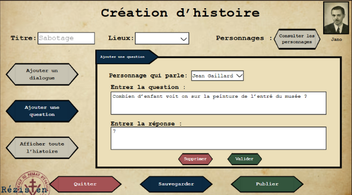
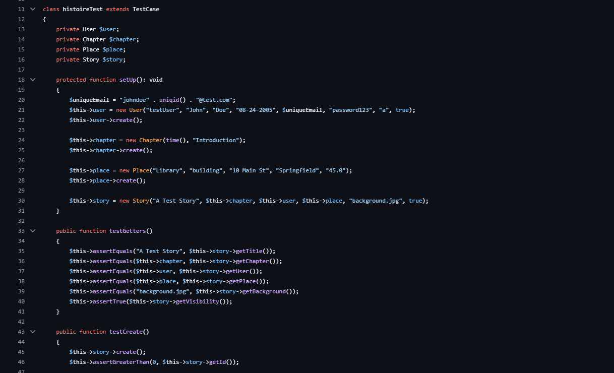

Rezisten
Application web narrative — Patrimoine de la Seconde Guerre mondiale
← Retour aux réalisations
Contexte
Dans le cadre de notre formation en BUT informatique, nous travaillons en équipe de sept sur le développement d'une application client-serveur sécurisée, s'appuyant sur une base de données.
Objectifs
- Collecter et formaliser le besoin des utilisateurs.
- Développer une application communicante intégrant la manipulation des données et respectant les paradigmes de qualité.
- Organiser le travail en équipe pour répondre efficacement à ce nouveau besoin.
Technologies
Mes réalisations
- Imaginé des fonctionnalités innovantes pour l'application.
- Travaillé sur la création de différents personas représentant les utilisateurs finaux potentiels.
- Identifié les besoins fonctionnels et non fonctionnels de notre application.
- Travaillé sur la conception des maquettes.
- Effectué les tests unitaires avec l'aide de PHPUnit.
- Confectionné plusieurs parties des modèles puis aidé le groupe à les comprendre et à les implémenter dans les controllers.

